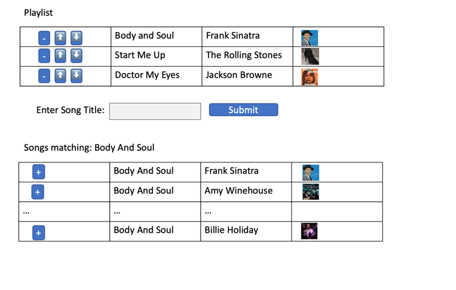

COMP 2406 Fall 2022
Assignment 4: API-based Express Server
Due Wed. Nov. 23 by 10:00pm submitted to brightspace
Assignment Revisions and Corrections will be noted here.
Rev 1: 2022 11 10: Removed the accidental statement that the assignment could be done in pairs. These are individual assignments.
Express.js Music Server
The purpose of this assignment is to give you practice building a node.js application that accesses a public API, and uses the express.js framework. For this assignment you are given a choice to make either a thin client or a thick client solution.
This assignment is based on Tutorial 07 and the course notes 14 on creating express.js applications.
The components are:
Server build with just Node.js and the Express.js framework.
Public iTunes JSON API.
Client side application page served by the server.
Either a thin client or thick client solution:
Thin Client -the server creates the HTML web pages based on client requests. The client simply renders the html pages.
Thick Client - client side javascript that manipulates the DOM (HTML elements) directly based on the JSON data the client receives from the server. (Client-Server data exchange should be based on JSON.)
Assignment restrictions:
You are (finally) free to use express.js and whatever other npm modules you find useful though no other ones are really necessary for the assignment.
Marking: This assignment is based on 18 design requirements numbered R1.1...R3.7 for a total of 36 marks.
Marks are awarded, or deducted, based on requirements as follows. Note: TAs will be running and evaluating your assignment code so we are not requesting a demonstration video for the four term assignments(only for the final project).
| Req Type | Assignment Grading |
|---|---|
| R0.x | Critical Submission and Intent Requirements. Assignment gets 0 if any critical submission requirement (shown in red) is not met. |
| R0.x | Good Practice Requirements. You lose 2 marks for each good practice requirement (shown in amber) not met. |
| Rx.x | Design Requirements. You earn 2 marks for each design requirement (green) satisfied and well implemented; 1 mark if it's partly met or met but not well implemented; and 0 if it's not met or attempted. |
Submission and Good Programming Practice Requirements
The following requirements pertain to all your assignments regardless of what your application is supposed to do (i.e. regardless of the design requirements). These requirements are to ensure that your code is usable, readable, and maintainable.
R0.0 UNIQUENESS REQUIREMENT. The solution and code you submit MUST be unique. That is, it cannot be a copy of, or be too similar to, someone else's code, or other code found elsewhere. You are, however, free to use any code posted on our course website as part of our assignment solution. [Assignment mark =0 if this requirement is not met.]
R0.1 CODE SUBMISSION ORGANIZATION AND COMPILATION: You should submit all the code files and data files necessary to compile and run your app. The TA's will execute your app by following the instructions you provide in the README.txt file. You must submit a single.zip formatted file to brightspace. (not .rar or .tar or whatever). Though you are permitted to write code on Windows, Linux, or Mac OS the code must be generic enough to be OS agnostic. (See also the the requirement below about not submitting the node_modules directory). Your code must work with at least a current Chrome browser and version 16.x.x of node.js
[Assignment mark =0 if this requirement is not met.]
R0.2 README FILE: Your submission MUST include a README.txt file telling the TA how to setup and run your app. The TA should NOT have to look into your code to figure out how to start up your app. Your README.txt MUST contain the following:
-
Your name, student number.
-
Version: node.js version number and OS you tested on your code on.
-
Install: how to install needed code modules. This will likely look like
npm installornpm install module_name -
Launch: Instructions on how to launch your app. e.g.
node server.js. As the course progresses there will be more launch options so it's important to provide instructions. -
Testing: Provide Instructions on what the TA should do to run your app. e.g. visit http://localhost:3000/mytest.html?name=Louis. If your app requires a userid/password to run then provide one for the TA to use. Your server should print to the console the URL's that should be visited by the browser to demonstrate your app. List them in the order you want us to visit them:

-
Issues: List any issues that you want the marker to be aware of. In particular, tell us what requirements you did not implement or that you know are not working correctly in the submitted code. Here you are giving us your own assessment of your app.
Pay attention to any specific URL's that must be supported by your app.
[Assignment mark =0 if this requirement is not met.]
R0.3 INTENT REQUIREMENT: The solution
and code you submit must comply with the intent of the assignment. For example if you are required to build a node.js/javascript server and you choose to build an apache/PHP server instead you will have violated the intent of the assignment even though the user input-output experience might be the same. As another example, if you are asked to build a "thick client" solution where the server just supplies data and the browser renders it but you build a "thin client" solution where the server renders all the HTML pages you will have violated the intent even though the user's experience would look the same.
[Assignment mark =0 if this requirement is not met.]
R0.4 VARIABLE AND FUNCTION NAMES: All of your variables and functions should have meaningful names that reflect their purpose. Don't follow the convention common in math courses where they say things like: "let x be the number of customers and let y be the number of products...". Instead call your variables numberOfCustomers or numberOfProducts. Your program should not have any variables called "x" unless there is a good reason for them to be called "x". (One exception: It's OK to call simple for-loop counters i,j and k etc. when the context is clear and VERY localized.) Javascript variables don't have types which can help clarify their meaning so choosing good names is even more important. Many functions in javascript are annonymous (have no name) and so the name of the variable that refers to them is even more important.
Remember: any fool can write code that a computer will understand; the goal is to write code that we can understand. [Minus 2 marks from assignment if this requirement is not met.]
R0.5 JAVASCRIPT IN STATIC HTML: Your static html pages should NOT make direct reference to javascript functions. Don't do something like the following:
<button type="button" onclick="myFunction()">Try it</button>
Instead do something like this:
<button type="button" id="submit_button">Try it</button>
and elsewhere in your javascript file say:
document.getElementById('submit_button').addEventListener('click', myFunction)
[Minus 2 marks from assignment if this requirement is not met.]
R0.6 COMMENTS: Comments in your code must coincide with what the code actually does. It is a common bug to modify or cut-and-paste code and forget to modify the comments and so you end up with comments that say one thing and code that actually does another. Don't over-comment your code - instead choose good variable names and function names that make the code "self commenting". Don't be reluctant to create local variables so that the variable name provides more clarity -there is no prize for having the fewest lines of code. [Minus 2 marks from assignment if this requirement is not met.]
R0.7 MODULARIZATION: Your client-side and server-side javascript should not be in two giant files. Break you client-side javascript into smaller manageable and readable files and include them individually with <script> tags in your html document. On the server-side use requires or imports appropriately to organize your code into managable size files. [Minus 2 marks from assignment if this requirement is not met.]
R0.8 BLOATED CODE: If your assigment uses external modules installed with npm, DON'T submit the node_modules directory with your code (it's potentially huge). Remove that directory and only submit the package.json and package-lock.json files. The TAs will use these files to intall the required modules. NPM modules are platform specific and must be reinstalled on the markers platform (they would have to remove your node_modules directory). [Minus 2 marks from assignment if this requirement is not met.]
R0.9 CITATION REQUIREMENT: If you use code from other sources you should cite the source in comments that appear with the code. If the source is an internet website then put the URL in the comments. You may use bits of code from outside sources but this may not form the complete solution you are handing in.You DON'T have to cite demo code we provide on the course web site or with tutorials and assignments, however that code should not be used for things you post publicly (like on GitHub). [Minus 2 marks from assignment if this requirement is not met.]
VERY IMPORTANT: Any sample code fragments provided may have bugs (although none are put there intentionally). You must be prepared to find errors in the requirements and sample code. Please report errors so they can be fixed and an assignment revision posted.
Application Requirements
Background
Public HTTP-based API's (often referred to as RESTful API's) have become very popular. They typically serve JSON data based on client HTTP requests. They also respect the stateless nature of HTTP -the client provides everything in each query that the server needs to respond. API's don't typically serve web-pages rather they serve XML or JSON data that other servers or "thick" clients can use to populate web pages. Or, in the internet of things, maybe no web pages are ever involved. API's are nice because their data can be consumed and repackaged in many different ways (browsers, mobile apps, IoT devices).
We want to build a client-server app that uses the iTunes API for providing the details of recorded songs based on querying by song title. This is based on the work you would have done in tutorial 07.
The client webpage should look something like the following (subject to the requirements provided).

Application Requirements
1) Server-Side Requirements
R1.1 The server should be built as an Express.js application. It could be a very simple or minimal express app or use many express features -no particular complexity is specified.
R1.2 The server application should make use of a package.json file to specify all the npm modules needed by your app (possibly only express.js) The marker should be able to install all the module by executing npm install. DO NOT submit installed npm modules with your assignment. We want to install those ourselves and keep the submitted code size small. In other words, don't submit your node_modules directory with your code.
R1.3 Your package.json file should list specific version numbers of the modules you install. Don't have it install "the latest" modules. You must be specific about the version number. You may, however, use the optimitic version numbering if you want (i.e. the version number with the ^ character in front of it.)
R1.4 With Express.js and package.json comes new ways of launching your server app. Up until now we have always lauched with the command node server.js. Make sure your README.txt file tells us exactly how to launch your app; the marker will not be expected to try and figure it out. Also include the instructions for installing the npm modules you need in your README.txt file.
R1.5 The server should obtain song infromation from the iTunes public API. (This API does not require an APP ID.) Note if you want to substitute a different music API like SoundCloud or Spotify that is OK as long as it can meet the requirements of the assignment. The client should have no directly interaction with the API. That is, the client should not be aware of what API the server is using (the server should be able to switch to another API without affecting the client).
R1.6 If your server needs to serve static files to the client then it should provide a static server using the express use(express.static ...) middleware. If your application does not require a static server part then you don't need to provide this and the requirement will be deemed as met.
R1.7 The amount of song data served by the server should be reasonable. (If the API queries provide too much data the server should reduce it to a reasonable amount before sending the response to the client). Thus the client can be coded to render, or show, all the data provided by the server. You can limit the API search to, say, 20 songs by default.
2) Client Layout Requirements
R2.1 The client webpage should have three areas: a Playlist area, an Input Area, and a Search Results area. The Playlist area should be at the top of the page, the Input Area below that and the Search Results area at the bottom. The Playlist area should have a heading: "Playlist" and the Search results area should have a heading "Songs matching: Body And Soul" in which the heading shows the song title being matched.
R2.2 The playlist area should have a heading as described above and a table of songs representing the user's playlist. The table should have four columns. Column one should contain three buttons. The first button should be labelled "-", the second with some kind of "up arrow" character and the third with some kind of "down arrow" character. These buttons are intended to be used to 1) remove a song from the playlist, 2) move a song up in the playlist order, and 3) move a song down in the playlist order. The second column should show the title of the song. The third column should show the artist. The fourth column should show an image of the song recordings artwork. It is up to you whether the table is shown with borders or not.
R2.3 The input area should consist of a label: "Enter Song Title:", a textfield where the user can enter a song title and a submit button.
R2.4 The song search area should have a heading as described above and a table of songs representing the search results. The table should have four columns. Column one should contain a button labelled "+". This button is intended to be used to add the song to the user's plalylist. The second column should show the title of the song. The third column should show the artist. The fourth column should show an image of the song artwork. It is up to you whether the table is shown with borders or not.
3) Client Behaviour Requirements
R3.1 The client should be able to reach the server at any of the following URL's
http://localhost:3000/mytunes.html
http://localhost:3000/mytunes
http://localhost:3000/index.html
http://localhost:3000/
http://localhost:3000
That is, all those routes should amount to the same thing. Here you need to figure out the best way to handle multiple URL's that should resolve to the the same result. When the app launches the users playlist area should be empty. That is, there is no requirement in this assignment for the application to remember the user's playlist.
R3.2 When the client types a song title into the labelled text box and presses the "submit" button or hits the enter key the page should be refreshed, or a new page loaded, with new song data obtained from the server. Their current playlist should not be affected by this operation.
R3.3 The song search results should be displayed as an html table with the four columns described in the layout requirements. The artwork of the song should appear as an image in the table.
R3.4 If the "+" button of a song in pressed in a search results tabel row then that song should be added to the bottom of the user's playlist table. The page should update right away when the "+" button is pressed.
R3.5 If the "-" button of a song in the user's playlist table row is pressed that song should be removed from the the user's playlist table and the number of rows in the table should shrink. The page should update right away when the "-" button is pressed.
R3.6 The songs in the playlist area are in order. If a song's "up arrow" button is pressed that song should move up one position in the the user's playlist table. If the song is already at the top position the button press can be ignored. The page should update right away when the "up arrow" button is pressed.
R3.7 The songs in the playlist area are order. If the song's "down arrow" button is pressed that song should move down one position in the the user's playlist table. If the song is already at the bottom position the button press can be ignored. The page should update right away when the "down arrow" button is pressed.